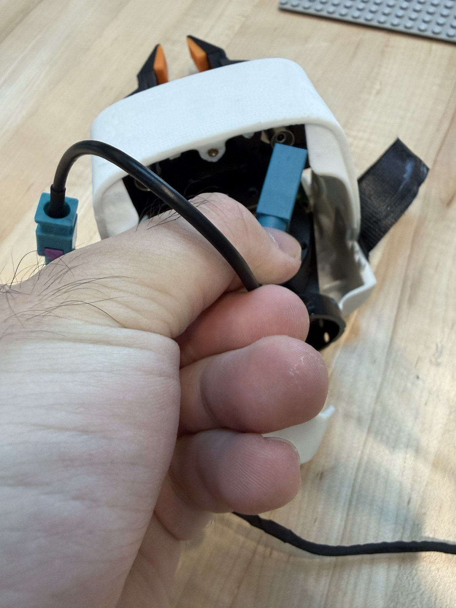
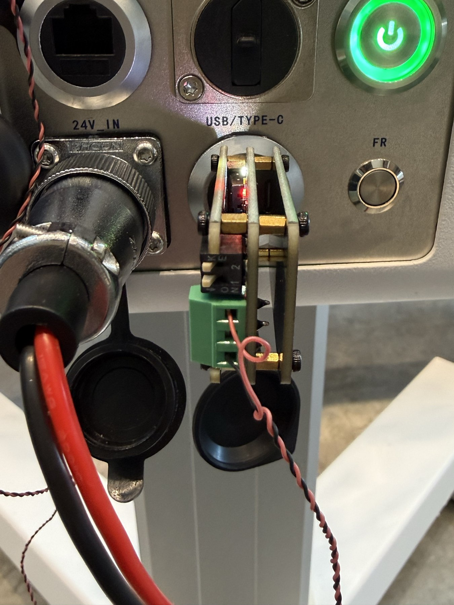
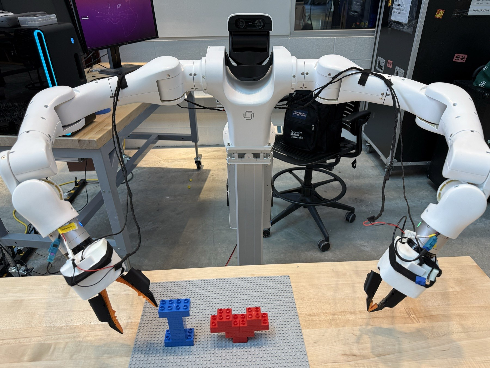
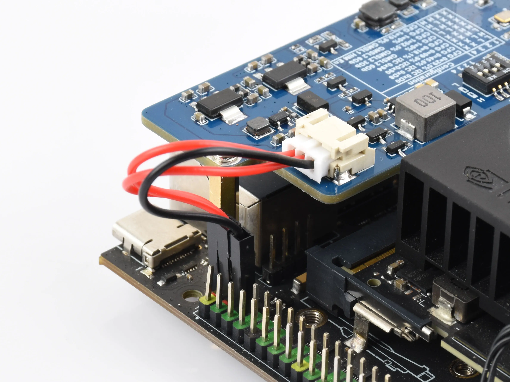
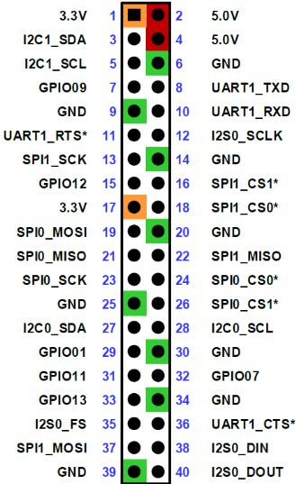
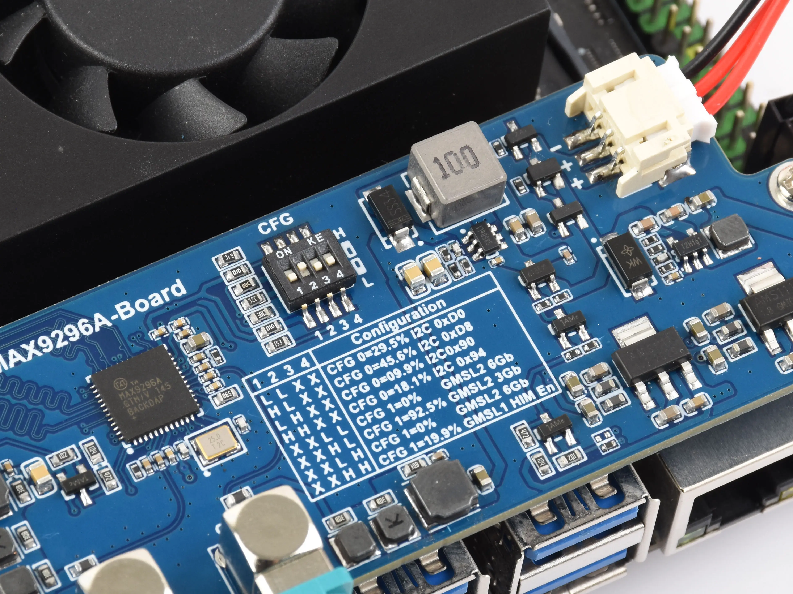
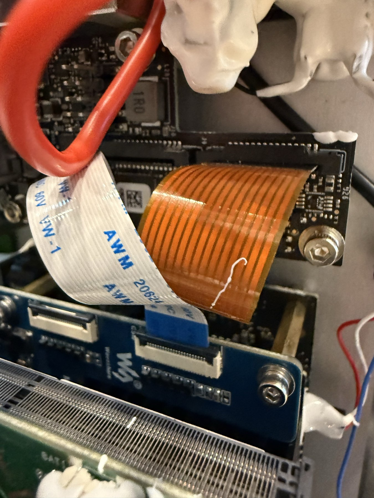
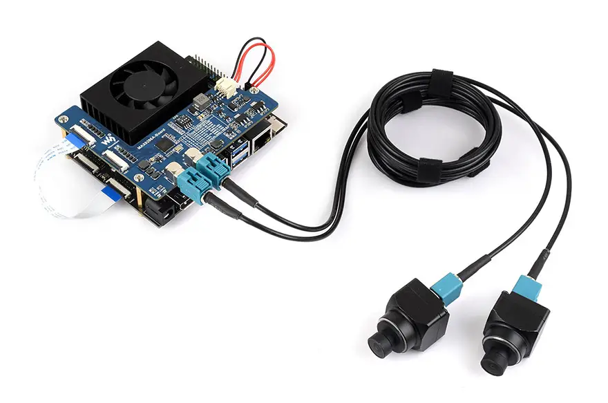
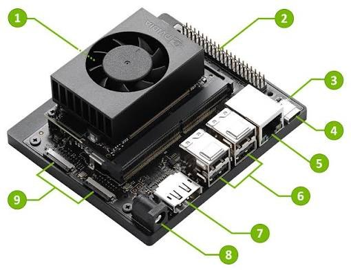
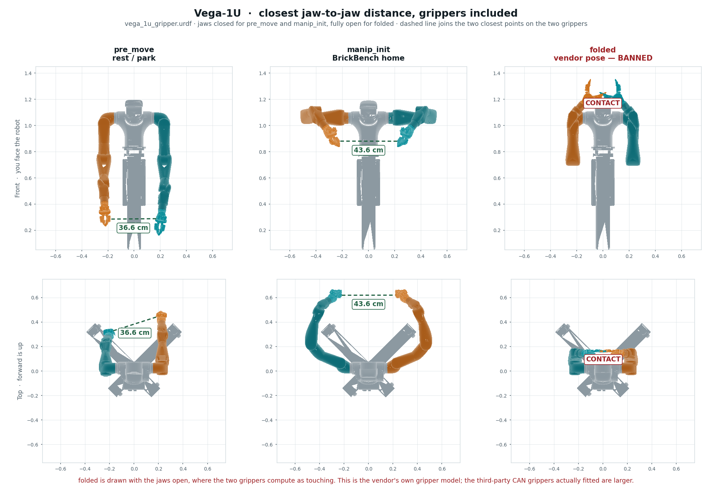

一次性硬件安装
1 · 夹爪线束与腕部相机
- 使用已组装好的线束：一端接 CAN adapter；左右两侧各有 4-pin / 6-pin 接口。6-pin 接夹爪，4-pin 接机器人。按接口键位插合，不根据线色猜测 pinout。
- 相机线也必须连接。腕部只接偏向内部的一侧，以 IMG_9360 的实际安装方向为准。
- CAN adapter 插到机器人 USB 口。两个 switch 都拨向 K 一侧，参照 IMG_9369。这是照片中这一型号的安装方向；不要把它和 Waveshare 的四位 CFG 开关混淆。
- 检查线束松弛量与固定位置，避免关节运动牵扯插头。整体走线参考 IMG_9361 与 IMG_9368。



2 · MAX9296 采集板、铜柱与 CSI 排线
- 先用 kit 自带铜柱连接采集板与 PCB；按下图定位电源、CFG 和 CSI 接口。
- 连接电源：两根红线分别接 Jetson 40-pin 的 2 与 4（均为 5V），黑线接 6（GND）。按编号定位，勿把 1 的 3.3V 或机器人 24V 当作此电源。
- Waveshare CFG 按板上编号 1→4 设置为 0100。
- 拆下机器人原有铜柱并保存。先用 15mm 铜柱固定钢架，再接 10mm 铜柱安装剩余内存／存储组件及风扇。确认堆叠后的绝缘间隙、风扇空间和排线弯曲半径。
- 如果拿到母母相机线：拆开机内通往腕部相机的连接，接到采集板。如果拿到公母相机线：拆下机器人后盖的外部相机接口，以公母线直接连接；IMG_9277 演示的是这一种。
- 拆除原先接 Jetson CAM1 的排线，换用 kit 附带排线，连接 Jetson CAM1 ↔ Waveshare CSI0。不要理解成将原先的整个相机链路随意转接。头部 ZED Link 保留在 CAM0；双腕 Waveshare 使用 CAM1。
- 连接后逐一核对电源极性、锁扣、走线和固定件，再通电。






接线依据：用户现场照片和说明；电源、CSI 与 CFG 已核对 Waveshare 官方 Jetson Orin 文档。铜柱尺寸是本机器人现场安装方案。
新机器人快速安装
先完成硬件安装、机器人自己的证书与厂商基础环境。以下安装器复制本仓库夹爪库、相机初始化库、位姿脚本、驱动和 systemd 配置；不会刷机、更新固件或自动执行运动。
| 组件 | 固定版本／目标平台 |
|---|---|
| Jetson | Orin Nano 8GB · p3767-0005 + p3768 carrier |
| L4T / kernel | 36.5.0 / 5.15.185-tegra · aarch64 |
| Python | System Python 3.10 |
| Firmware / dexcontrol / dextop | 0.5.x / 0.5.0 / 0.5.0 |
| dexsensor / ZED SDK | 0.7.6 / 5.2.3 |
| ZED Link Duo | 1.4.3-LI-MAX96712-L4T36.5.0 |
| python-can / dexmate-urdf / pin | 4.6.1 / 0.8.4 / 4.1.0 |
准备厂商基础环境
使用 Dexmate 软件站的 dexsensor 0.7.6、Stereolabs ZED SDK 5.2 历史版本页中的 5.2.3，以及对应内核的 ZED Link Duo 1.4.3。先按厂商流程安装，再运行本仓库安装器。完整文件名和 SHA256 在仓库 provenance/vendor-installers.json。这些厂商安装包与证书不在公共 Git 中；Python 依赖从 PyPI 安装，故此流程需要联网。
git clone https://github.com/intelligent-control-lab/dexmate-setup.git
cd dexmate-setup
/usr/bin/python3 scripts/install.py
# Replace YOUR_SERIAL with this robot's actual identifier.
sudo /usr/bin/python3 scripts/install.py --apply \
--robot-name dm/YOUR_SERIAL-1u --user dexmate \
--install-deps --camera-boot --activate-camera-boot --configure-head第一条 install.py 只读检查并显示计划。--apply 才会写入；--install-deps 安装 apt 和固定版本 Python 依赖；--camera-boot 基于新机器自身 initrd 生成独立启动文件；--activate-camera-boot 才修改 DEFAULT；--configure-head 备份并替换 dexsensor 模板。只想预先添加启动项时省略 activate 参数。
安装后
- 检查
/boot/extlinux/extlinux.conf新增的DexmateSetupHeadWrists项。接好显示器和键盘，确认原启动项仍可选。 - 安排人工重启；安装器不重启，也不启动 CAN 或相机服务。
- 重新登录，使 video / i2c 组权限生效，然后执行下方只读检查。
- 按后文分别验收头部、双腕相机和夹爪；位姿运动最后在现场监督下进行。
source /opt/dexmate-setup/env.sh
cd ~/dexmate-setup
python3 scripts/doctor.py此处 ~/dexmate-setup 是示例克隆位置。安装位置固定为 /opt/dexmate-setup/{gripper,poses,venv} 与 /opt/wrist-cameras，不会覆盖旧 ~/py_scripts。
每次使用：连接与检查
正常使用只需连接已经配置好的机器人，不要重复一次性安装。WiFi 地址来自 DHCP，可能变化；在机器人屏幕运行 ip -br addr 查看。有线参考地址 Jetson 192.168.50.20，SoC 192.168.50.21。使用该机器自己的 SSH 凭据。
ssh dexmate@ROBOT_IP
source /opt/dexmate-setup/env.sh
dextop topic list --timeout 10
dextop doctor check
systemctl status dexsensor wrist-camera-init.service --no-pager
cat /run/wrist-cameras/ready.jsonROBOT_NAME 必须是 dm/序列号-1u（斜杠）。非交互 SSH 不读取 ~/.bashrc，要显式 source 环境。IP 变化只需更新连接目标，不用重装。
ssh dexmate@ROBOT_IP 'source /opt/dexmate-setup/env.sh; dextop doctor check'读取头部与腕部相机
头部：订阅现有 dexsensor 服务
在 source 了环境的 Jetson 上运行。不要启动第二个头部服务，也不要同时让另一个 ZED SDK 进程占用相机。此示例不构造 Robot。
from dexcontrol.core.config import get_robot_config
from dexcontrol.sensors.manager import Sensors
configs = get_robot_config()
configs.sensors["head_camera"].enabled = True
sensors = Sensors({"head_camera": configs.sensors["head_camera"]})
try:
sensors.wait_for_all_active(timeout=10)
obs = sensors.head_camera.get_obs(
obs_keys=["left_rgb", "right_rgb", "depth"], include_timestamp=True)
if any(obs[k] is None for k in ("left_rgb", "right_rgb", "depth")):
raise RuntimeError("Head streams are not ready")
print(obs["left_rgb"]["data"].shape)
print(sensors.head_camera.get_camera_info())
finally:
sensors.shutdown()左右 RGB 形状为 (1200,1920,3)，深度是米制浮点 (1200,1920)。带时间戳时每流含 data / timestamp_ns / receive_time_ns；默认不带时间戳时直接返回数组，尚未就绪时可能为 None。configs.sensors 是字典，字段必须写 enabled。深度同时需要服务 enabled、depth_mode="NEURAL" 和 [sensors.streams] depth=true。头部内参通过 get_camera_info() 读取，不复制另一台机器的标定。
双腕：本机 WristCameras API
from wrist_cameras import WristCameras
with WristCameras() as cameras:
obs = cameras.get_obs(timeout=3)
for name, frame in obs.items():
print(name, frame["rgb"].shape, frame["frame_id"])
# RGB uint8: (1536, 1920, 3)
# frame["timestamp_ns"]: pipeline PTS, NOT Unix time
# frame["received_monotonic_ns"]: host monotonic clockAPI 从 sysfs 自动识别 A/B 设备，不固定 video0/1；A/B 是连接器标签，尚不能直接当作左／右手。必须先有当前 boot 的 ready.json。每次读取默认等待两路新帧，返回可修改副本；独占两路设备和软件触发。上下文退出时停止取流并释放锁。它是本机接口，没有接入 Dexmate 的 ZED X One 腕部条目，也不提供硬件同步。
机械臂与头部位姿
运行时可控关节共 17 DOF：双臂各 7，头部 3；无已发布的 torso/chassis 控制。头部轴顺序为 pitch / yaw / pitch，负 j3 向下。新版本 goto_ready.py 先右臂后左臂，默认 0.04rad/步、0.8s 等待，并设置参考头部视角约 [0,0,-0.505622]。goto_rest.py 先左臂后右臂。头部角度与相机外参必须在新机重验。
| 位姿 | 左臂（rad） | 右臂（rad） |
|---|---|---|
| pre_move | [1.7289, .0101, .0041, -.9924, -.2311, .5011, -.0066] | [-1.5683, -.0026, .0031, -.9916, .0908, -.4138, -.0018] |
| brickbench_home / manip_init | [0, 1.2, 1.4, -1.57, -1.57, 1, -.35] | [0, -1.2, -1.4, -1.57, 1.57, -1, .35] |
source /opt/dexmate-setup/env.sh
cd /opt/dexmate-setup/poses
python3 goto_ready.py --dry-run # may home the head
# Supervised motion, only after checking workspace clearance:
python3 goto_ready.py
python3 goto_rest.py--head 或 --head-rad J1,J2,J3 可覆盖默认头部目标。原 head_pose.py 作为历史库保留；最新 goto_pose 的标定头部路径使用有界 set_joint_pos_vel。头部会话退出后可能松弛，依赖该视角的采图要保持同一会话。
为什么必须分臂运动
参考路径 pre_move→manip_init 的最小腕心间距：同时 0.354m、左先 0.431m、右先 0.459m；反向左先更宽。脚本按实际分步路径做 FK，低于 0.35m 就拒绝。此仓库补充了 FK 依赖缺失时直接拒绝的检查；腕心距离仍不是完整碰撞证明。

get_joint_pos()、get_joint_vel()、臂电流及 wrench/button state 可经 Robot 读取，但构造时可能动头。set_joint_pos 支持绝对／相对目标；不要把位姿示例改成未经验证的高速循环。物理急停与 robot.estop.activate() 是互补关系。运行结束先完成受监督的回位，不要随意让机械臂失电下垂。
夹爪 API 与 CAN 验收
夹爪是两个 MG4005-i10 V3，通过 Jhoinrch RH-02 USB-CAN 控制，不属于 robot.left_hand。适配器是 can1，不是 Jetson 自带 can0；1Mbit/s，gs_usb 驱动。照片中两个 switch 朝 K；该参考双端内部终端电阻布线要求适配器 R120 关闭，断电测 CAN H/L 约 60Ω。不能仅凭其他型号上的开关方向推断电气状态。
source /opt/dexmate-setup/env.sh
cd /opt/dexmate-setup/gripper
python3 gripper_selftest.py check # no motion; does CAN queries/bus setup
# Supervised full test: check -> open -> close -> stop
python3 gripper_selftest.py all重接线先用 selftest 扫描 1–32 ID，确认 ACK、状态与故障。check 不驱动电机，但会建立 CAN 接口并发查询，并非完全被动；完整测试必须实际完成 open、close、stop。旧库假定 1=左、2=右，重新布线后不能直接沿用。历史上左线缆断芯的记录不是当前电机状态。
from gripper import Grippers
g = Grippers()
try:
g.home() # physical homing; jaw motion
g.both_move_to(0.4, speed=500)
print(g.position(), g.status())
# g.grip(current=0.6) # current-limited grasp
finally:
g.halt() # stop before closing the socket
g.close_bus()move_to(0..1) 是闭合到张开的比例，home 后才有效。双爪用 both_move_to，不要串行循环两个 move_to。close 是空爪到闭合位置；碰到物体仍可能堵转，抓取应使用限流 grip。每次供电或 release 后重新 home；保存的多圈编码值不可跨掉电复用。
| 操作 | 含义 |
|---|---|
| halt / 0x81 | 停止运动，保持上电与标定 |
| release / 0x80 | 失能、夹爪松开，多圈坐标丢失 |
| close_bus | 只关 SocketCAN，不能替代 halt |
| 0xA4 | 带速度限制的绝对位置；0xA2 是速度控制 |
只运行一个 CAN 客户端。电机不会主动广播，空 candump 不能证明断线；TX 固定为 3 表示邮箱卡在未确认帧，不能当作通信成功。自由运动通常低于 0.3A，硬限位约 2–2.5A；这是参考观测，不是新夹爪的自动安全标定。
网络、证书与软件架构
dextop 负责证书、固件与诊断；dexcontrol 在运行控制代码的机器上使用；dexsensor 只在 Jetson 采集并发布相机数据；socbridge 在 SoC 提供网页管理。它们通过 Zenoh 通信。默认在 Jetson 本机运行，远程工作站需要相同网络、匹配软件与该机器授权的证书。
第一次联网
可用 DisplayPort 显示器加 USB 键鼠，或有线网连接。工作站使用未占用的 192.168.50.2–254 地址（避开 .20/.21），掩码 /24。无已知 WiFi 时机器人可开热点；不同批次参考地址为 10.42.0.1 或 192.168.4.1。热点凭据以交付信息为准。加入已知网络后热点消失、SSH 断开是正常现象。
nmcli device wifi list
sudo nmcli --ask device wifi connect "YOUR_SSID"证书与固件：每台机器独立
通过 https://192.168.50.21:57832 的 SoC portal 安装该机器证书；需要时从工作站用 sshuttle 建立路由。未安装 portal 的机器，按厂商流程执行 socbridge 安装。不要将证书、私钥、WiFi 密码提交到 Git。
dextop cert unpack /secure/path/THIS_ROBOT.dzcfg
dextop firmware info
# If socbridge is absent, follow the vendor procedure:
# dextop firmware install-socbridge升级固件必须遵循厂商版本配套流程；本仓库固定 dexcontrol 0.5.0，面向固件 0.5.x。固件升级、证书导入、SoC 网络恢复均不由快速安装器自动完成。外部工作站还需设置 ZENOH_CONFIG 为本机证书目录下的 zenoh_peer_config.json5，并显式设置 ROBOT_NAME；ROBOT_IP 可辅助发现。dextop node install-service 会启动 relay，无需再运行第二个 node。
安装验收与关节范围
按“平台 → 服务 → 图像 → CAN 查询 → 现场动作”顺序验收。doctor.py 只读检查内核、服务、当前 boot 标记、视频节点和 CAN 配置；不会发送关节指令、CAN 查询或相机寄存器初始化。静态通过不等于已收到图像或电机应答。
uname -r
cat /etc/nv_tegra_release
dextop doctor check
dextop topic list --timeout 10
dextop firmware info
systemctl status dexsensor wrist-camera-init.service can1.service --no-pager
journalctl -u wrist-camera-init.service -b --no-pager
cat /run/wrist-cameras/ready.json
ip -details -statistics link show can1- 核对上面的固定版本，确保无错误内核模块。
- 头部读取左右 RGB 和深度，检查形状与时间戳更新；双腕用 API 连续读取并确认两路 frame_id 都递增。
- 退出相机上下文后重新打开，确认锁被释放。A/B 对应物理哪只手需现场记录。
- 夹爪先 check，再在现场做完整 all；确认每个电机的实际方向与 ID。
- 最后检查 FK 依赖、工具间隙和急停，在新机重新验收 ready/rest；不要把历史采图成功当作冷启动或运动认证。
参考机器人关节范围
| 关节 | 左侧（rad） | 右侧（rad） |
|---|---|---|
| j1 | ±3.071 | ±3.071 |
| j2 | [-.453,1.553] | [-1.553,.453] |
| j3 | ±3.071 | ±3.071 |
| j4 | [-3.071,.244] | [-3.071,.244] |
| j5 | ±3.071 | ±3.071 |
| j6 | ±1.396 | ±1.396 |
| j7 | [-1.378,1.117] | [-1.117,1.378] |
Vega-1U 运行时发布双臂与头部，合计 17 DOF。固件表出现 torso 不能证明有可控腰部；以 topic 和组件为准。URDF 仍可能包含 Lift / torso_flip，离线模型维数不能代替运行时接口。新机器应读取自身 joint_pos_limit；表格是参考值。
相机启动链与驱动版本
头部 ZED X Mini 通过 ZED Link Duo / MAX96712 接 CAM0（serial_b、port-index 1、2 lanes）；双腕 OEM ISX031 / MAX9295 接 Waveshare MAX9296A，再由 CSI0 接 CAM1（serial_c、port-index 2、4 lanes）。OEM 腕相机输出 1920×1536 UYVY；不能套用配置中的通用 ZED X One 腕部条目。
合并 overlay 保留头部的 26 个 VI/CSI 通道，并增加腕部 26/27。头部 TCA9546 位于 CAM0 GPIO mux 分支下，因此 tegra-camera 使用 parent-walk 补丁；腕部驱动适配 MAX9295 ID 和 3Gbps。仅有 video 节点不足以出图，还需要 OEM 寄存器初始化和软件触发。
- extlinux 选择独立 overlay 和独立 initrd，保留原 Image、DTB 与 initrd。
- initrd 在切根前，以只读 bind mount 提供补丁模块。
- wrist-camera-init.service 等待两腕探测，初始化后写当前 boot 的 ready.json。正常 oneshot 状态是 active (exited)。
- WristCameras 打开时取流和触发，关闭时停止；开机服务不会持续录像。头部仍由 dexsensor 发布。
| 2026-09-15 历史测试 | 实测速率 |
|---|---|
| Head left / right HD1200 | 15.105 fps each |
| Head NEURAL depth | 15.054 fps |
| Wrist A / B native UYVY | 9.327 / 9.293 fps |
| Full-resolution wrist RGB API + head subscriber | 5.80 pairs/s |
| 45.020s composed motion video | 236 frames · 5.24 fps preview |
当时共同取流重叠 19.662s，时间戳递增，应用捕获/触发错误为 0；启动/停止仍有内核日志信息。30fps 腕部、长期稳定性、重插及完整新默认冷启动未建立验证结论。AGX 的 5.15.148-rt 整包不能安装到本 Nano 的 5.15.185-tegra。
手动重新初始化前关闭所有腕部读者，再执行 sudo systemctl restart wrist-camera-init.service。不得热卸载 nvhost_isp5 或批量卸载相机栈，历史上已触发 kernel panic。内核升级后重建并重新验收，不绕过包依赖。
故障排查
| 现象 | 下一步 |
|---|---|
| 腕部服务读取 0x44 失败 | 先断电核对对应同轴链路、接口和供电，再看当前 boot 日志；不要先热卸载内核模块。 |
| CAMERA NOT DETECTED，但 SDK 可用 | 检查 video 节点、zed_x_daemon 和内核 vermagic；用户态 SDK 能加载不代表内核驱动匹配。 |
| 深度配置 NEURAL 但日志 NONE | 还需 sensors.streams.depth=true 和 enabled=true。 |
| 相机字段改了仍无数据 | 字段为 enabled，configs.sensors 是字典；确保 Jetson dexsensor 在运行。 |
| 一爪响应，一爪安静 | 检查该支路供电/断线；断电交换已知正常线以定位，错误帧不能当作 ID 回复。 |
| CAN TX 固定为 3 / candump 空 | 未被 ACK 的邮箱可能堵住；电机只响应查询。核对 1Mbit/s、H/L、供电与终端。 |
| USB-CAN 进入 DFU | 检查 BOOT 开关，再拔插 USB；软件复位不能替代重新上电采样。 |
| 夹爪遥测读零或出现假 stall | 多个 CAN 客户端相互回显；只保留一个。0x0010 通常表示输出级关闭。 |
| 头部回到 home / dry-run 也动了 | Robot() 初始化有副作用。取图直接用 Sensors；保持同一头部控制会话。 |
| SoC 超时 / portal 不通 | 检查 192.168.50.21 路由和 Jetson .20 静态地址；外部机器需要合适路由。 |
| firmware info 超时但 topic list 成功 | 核对 ROBOT_NAME 的 dm/ 斜杠；topic list 通配符不能证明名称正确。 |
| sudo 找不到 dextop | 使用已安装的绝对可执行路径；不要假设 root 继承用户 PATH。 |
| node 的 7447 端口占用 | install-service 已启动 relay，不要重复启动。 |
| ZED SDK 缺失但 pyzed 能 import | 检查所用环境与 C++ 标准库；优先使用匹配的系统环境。 |
| 保存的图红蓝颠倒 | RGB 转 BGR 再给 OpenCV。 |
| SSH 下 ZED 初始化失败 | 不要使用 ssh -X；使用普通 SSH。 |
刷机恢复与回退
刷机后恢复顺序
- 恢复匹配的 L4T 36.5.0 / 5.15.185-tegra 基础系统以及通往 SoC 的有线网络。
- 安装匹配的 ZED SDK 5.2.3、ZED Link Duo 与 dexsensor 0.7.6；用
/usr/local/zed/tools/ZED_Explorer -a检查，但避免和运行中的 dexsensor 争用。 - 安装固定版本 dextop，设置本机机器人名称，导入该机器自己的证书；需要时安装 socbridge。
- 运行本仓库安装器，接控制台人工重启，逐项验收。
历史上 JetPack 6.2.3 / L4T 36.5.2 的内核 5.15.199 与本 ZED Link 模块不匹配。即使都叫 36.5，具体内核仍不同。不要使用 --ignore-depends：厂商 postinst 还会写显示和硬件引擎模块。需要系统降级时先做 apt 模拟并审查全部 nvidia-l4t 包；本仓库不会自动降级或刷 bootloader。
回退本仓库安装
先在启动菜单选原 Stereolabs / primary 项，或从本次时间戳备份恢复 extlinux；不要把另一台机器的配置复制过来。每次安装的 manifest.json 列出修改路径及原文件是否存在。关闭所有读者，再恢复备份文件；对原本不存在的文件只移除本次安装的对应项。恢复后运行 sudo depmod -a 和 sudo systemctl daemon-reload，安排重启。
文件备份不是系统镜像：apt/pip 依赖、video/i2c 组权限、systemd enable 链接需分别核对。若卸载本仓库专属服务，先明确旧机是否已使用它们，再决定禁用。不要直接删除正在使用的虚拟环境或热卸载相机模块。
文件清单与依据
软件与配置于 2026-09-26 从机器人通过 SSH 导出，版本、原始文件校验值与当日状态在仓库 provenance/。只有明确列出的运行库和配置进入 Git；证书、私钥、日志中的凭据及机器标定未上传。
| 目录 | 用途 |
|---|---|
| software/gripper | Grippers / Motor 库、selftest 与历史说明 |
| software/wrist_cameras | 初始化、触发与双腕 RGB API |
| software/poses | ready/rest、位姿引擎、头部与只读传感器示例 |
| drivers | 精确版本模块、overlay、SHA256 与重建输入 |
| scripts | 安装、initrd 构建、只读检查和页面生成 |
| docs/assets | 四张实拍、两段 walkthrough、厂商图与原手册姿态图 |
GitHub 仓库 · 原英文手册归档（已脱敏，带历史状态提示） · Waveshare 官方硬件文档 · Dexcontrol 0.5.0 版本兼容说明
旧手册来自 Dexmate wiki、厂商支持和实验室排错记录；本版保留日常操作、一次性 setup、驱动背景与历史限制，并新增带图硬件步骤。